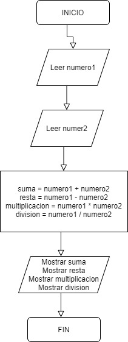

1. Realizar el diagrama de flujo para las siguientes operaciones matemáticas: Suma, Resta, División, Multiplicación y el módulo de un número, partiendo de dos números ingresados por el usuario.
2. Realizar operaciones con dos números. Pedir al usuario que ingrese dos números diferentes y mayores a cero. Para ambos números, calcular lo siguiente:
3. Crear un programa que pida al usuario ingresar la temperatura en grados Celsius y que la transforme a grados Kelvin y Fahrenheit. Se debe considerar la siguiente información respecto a la equivalencia de las escalas de temperatura:
4. Crear un programa que pida al usuario una cantidad de días y que muestre su equivalente en Años, Meses, Semanas y Días. Por ejemplo, si el usuario ingresa 373, el resultado debe ser 1 año, 1 semana y 1 día. Se debe considerar lo siguiente:
4. Crear un programa que solicite al usuario 5 números y realice los cálculos que se piden a continuación: